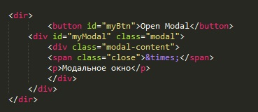
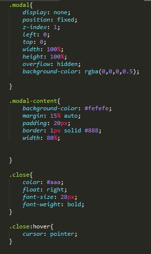
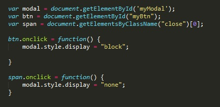

Рассмотрим код html
Здесь у нас кнопка button (id=myBtn), и блок div (id=myModal). Блок div в свою очередь имеет дочерний блок div (class=modal-content) который содержит два элемента: параграф p и span (class=close). Внутрь span помещаем код крестика, этот крестик будет у нас вместо кнопки закрыть. В чем суть появления модального окна, у блока div (id=myModal) мы будем менять свойство display, оно будет принимать либо значение none, либо block.
Рассмотрим код CSS
Блок .modal
Блок .modal-content
Блок .close
Блок .close:hover
Рассмотрим код JavaScript
В первой части кода мы объявляем три глобальные переменные, которые становятся объектами наших элементов (кнопка, блок с модальным окном и span). Немного уделю внимание строчке:
var span = document.getElementsByClassName("close")[0];
почему в конце мы добавляем квадратные скобки и указываем индекс 0? Дело в том что так как мы используем функцию getElementsByClassName, то переменной span присвоится массив всех элементов страницы с классом close. А потому надо указать какой элемент массива нам надо присвоить переменной span. Эту же строчку можно было записать как:
var span = document.getElementById("close");
но в этом случае в элементе span необходимо было бы указать идентификатор со значением close, ну и в css так же все поправить, что мы к элементу ссылаемся не по class а по id
Далее мы обращаемся к нашим переменным btn и span и вызываем у них событие onclick, в которых будут вызываться функции присвоения значения для свойства display - blok или none
var body = document.getElementsByClassName("body");
body.style.overflow = 'hidden';